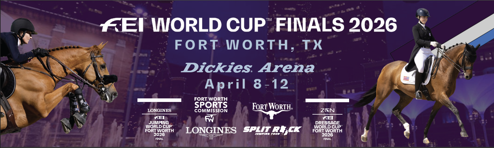

La FEI endurece los requisitos de acceso al Mundial de Caballos Jóvenes
A partir de 2026, los ejemplares de 5, 6 y 7 años deberán acreditar tres recorridos sin penalización en alturas mínimas crecientes para competir en el campeonato organizado junto a la WBFSH.

Foto: images.squarespace-cdn.com
La Federación Ecuestre Internacional ha anunciado cambios en los criterios de elegibilidad para el Campeonato Mundial de Cría de Caballos Jóvenes de Salto FEI WBFSH, que entrarán en vigor en 2026. Las nuevas exigencias establecen requisitos mínimos obligatorios según la edad del caballo para poder participar en el evento.
Los ejemplares de 5 años deberán acreditar tres recorridos sin penalización en pruebas de al menos 115 centímetros de altura. Para los de 6 años, el listón se sitúa en 125 centímetros, mientras que los de 7 años tendrán que demostrar su capacidad con tres recorridos limpios en competiciones de 135 centímetros como mínimo. Estas exigencias buscan garantizar que únicamente los caballos con un nivel técnico consolidado accedan a la cita mundial, elevando así el estándar competitivo del campeonato.
El evento, organizado conjuntamente por la FEI y la Federación Mundial de Criadores de Caballos de Deporte (WBFSH), se ha consolidado como una de las referencias internacionales para evaluar la calidad genética y deportiva de los ejemplares jóvenes destinados al salto de obstáculos. La FEI ha habilitado información ampliada sobre los nuevos requisitos en la página oficial del campeonato.
— Redacción de Hípica al Día